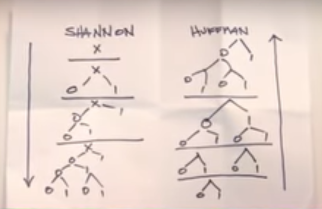

We are 'the new PiedPiper', a Compression Company which gives you
a lossless highly compressed file of your given file.We strictly
Follow the 'Tethics by Gavin Belson' . We are building a platform
to give the 'Internet You Deserve' which wil be provided soon
This website is created for only learning purpose. It's not dealing
with any copy right issues.apology if somegets hurt.
The Middle Out
Compression AlgorithmTM
Middle out is the revolutionary type of compression that Richard and Pied Piper Team came up with.
Pied Piper was "middle-out" compression, which allowed data to be more compressed without loss of integrity than ever before.
Compression AlgorithmTM
Middle out is the revolutionary type of compression that Richard and Pied Piper Team came up with.
Pied Piper was "middle-out" compression, which allowed data to be more compressed without loss of integrity than ever before.


Richard Hendricks
CEO/President
Richard hails from Tulsa.He has earned degrees from the University of Oklahoma and Standford.(Go Sonners and Cardinals!)Before starting Pied Piper,he worked for Hooli as a part time software developer.While his work focuses on applied information theory,mostly optimizing lossless compression schema of both the length-limited and adaptive variants,his non-work interest range widely,everything from quantum computing to chos theory.He could tell you about it , but THAT would NOT be a "length-limited" conversation!Erlich Bachmann
Senior Minority Owner,Chief Executive of Physical Space(Landlord)
Noted Silicon Valley entrepreneur and bon vivant Erlich Bachmann has founded both Palo Alto's Hacker Hostel incubator(allwed to reopen by the Sheriff's Department in 2011) and the airline booking aggregator Aviato,acquired by a major airline in 2008 for low seven figures. That's right.Seven.Figures. Has attended,for various lengths of time,Berkeley,Reed,Oberlin.and Hampshire College(B.A. in Ultimate Frisbee).Dinesh Chugtai
Lead Engineer
Bom in lslamabad, Dinesh became a naturalized cltizen in 2010, unlike Gilfoyle, who was an llegal Canadian alilen until quite recently and is a piece of garbage. He has recelved honors degrees in information theory and computer science from Yale, Caltech, and Oxford. His hobbies include both watching rugby and the wearing af its signature shirts (which perfectly combine form and function in a way nat popularly appreciated), libertarian politics, and being stared at suspiciously during air travelBertram Gilfoyle
System Architect
Glifoyle has played drums in a series of Toronto-area firstwave-DC-Infiuenced hardcore, thrashcore, hatecore, corecore, and corehard outfits under the name Strychnine McTwat. In foct, he has been asked to leave some of the most infuential bands in the Toronto scene, including Piss Nazis, the Scumsones, and Das Abortions. He was about to sign a high three-fgure deal with EboleTard Records, when the company's president was arested, and the companys office was impounded,. after drugs were found in Rts door panels duringa traffic stop. Non serviomJared(Donald) Dunn
Head of Business Devlopement
Jared's eerly ife is best passed ovet, but he managed to rise above it thanks to a series of lergely well-meaning foster parets, and went on to recelve a BA. from Vassar College in Economics. During those too-soon-over happlest of years, he was proud to sing second alto wth the "Joyce Carol Notes A Capella Confrontation" At Vassar he was also cOMSwain for Women's Heavyweight Crew, writer. After gradustion, he worked for Google and Congresswoman Nancy Pelosi before becoming a a director of special projects at Hool, working closely with CEO Gavin Belson, before moving to Pied Piper in 2014.Nelson 'BigHead' Bighetti
Majority Investor
Nelson "Big Head" Bighetti is the best friend of Richard, who he formerly lived and worked with in the Hacker Hostel (an incubator owned by Erlich) with Gilfoyle and Dinesh. He admittedly isn’t great at any one aspect of building sites or coding.During his time at the hostel, Big Head was developing Nip Alert.In The Uptick his and Erlich's company Bachmanity purchases Pied Piper.Monica Hall
Board Member of Pied Piper
Monica joined Raviga in 2010, worked her way up quickly under Peter’s tutelage, and is now the youngest Associate Partner in Raviga’s history.Before Peter Gregory's death, Monica was Raviga’s head of operations, handling the day-to-day duties of his tech investment business and often fielding pitches and working directly with tech folks using Peter’s money.Then She worked under Laurie Bream as an associate partner. Monica took a particular interest in Pied Piper's algorithm from the beginning and has taken Peter's board seat at Richard's requestGilfoyle's prized creation, "Anton," lives in the Hacker Hostel garage throughout the first part of the series. This handcrafted server farm hosted the Pied Piper startup for years until its sacrificial demise in the "Server Error" finale of Season 5. This lot includes six crates of various "Anton" parts used by the production design department to build the company server in the garage. It was Built when Pied Piper has limited amount of money left in there cart, so that they have to select to built a server or to accomodate a office . They decided to built server for there live streaming . Then it turn out to be streaming of a Condor's egg , which was suggested by Jared . Unfortunetly the Anton was destroyed by PiedPiper itself when they actually wanted to move it to the other place.
But when Gilfoyle Cracked in to the Smart Fridge of Jian Yang , he has to give access to PiedPiper's libraries . The Smart Fridge considered it as an update and forwarded it as an update to all other smart fridges . The all data of pied Piper was now on a network , A decentralized network !! All this happened unkowingly while the team has given up and went to apologize to there client. Now the came to know that all there Data was Actually safe on a decentralized Internet , The New Internet !!
Finally The Anton Died so We Could Live !!!
We are 'the new PiedPiper', a Compression Company which gives you
a lossless highly compressed file of your given file.We strictly
Follow the 'Tethics by Gavin Belson' . We are building a platform
to give the 'Internet You Deserve' which wil be provided soon
This website is created for only learning purpose. It's not dealing
with any copy right issues.apology if somegets hurt.
a lossless highly compressed file of your given file.We strictly
Follow the 'Tethics by Gavin Belson' . We are building a platform
to give the 'Internet You Deserve' which wil be provided soon
This website is created for only learning purpose. It's not dealing
with any copy right issues.apology if somegets hurt.
Pied Piper is a startup company focused on "multi-platform technology
based on a proprietary universal compression algorithm.Pied Piper, the
fictional startup headed by a tech genius who created a revolutionary
algorithm from Silicon Valley, doesn't exist in real life. But Terark does.
It's nowhere near Silicon Valley – the startup is based in Beijing – but fans
of the show will find a lot familiar about the Chinese compression startup.
based on a proprietary universal compression algorithm.Pied Piper, the
fictional startup headed by a tech genius who created a revolutionary
algorithm from Silicon Valley, doesn't exist in real life. But Terark does.
It's nowhere near Silicon Valley – the startup is based in Beijing – but fans
of the show will find a lot familiar about the Chinese compression startup.